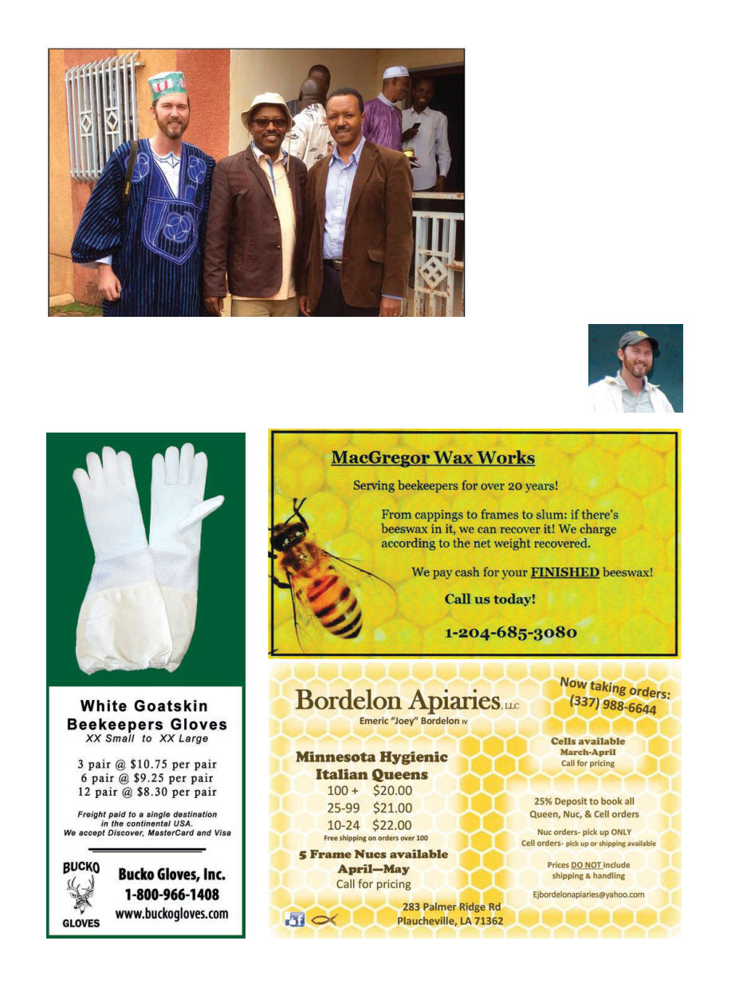

American Bee Journal
108
hopes we’d bribe them to let us pass
unmolested, as taxis with as many
as 13 locals in a sedan style car were
waved past. With Daniel, whom I
had invited and therefore felt like I
Author, Ibro the Winrock country director for Guinea, and Daniel from Ethiopia
was playing host to, I felt particularly
self-conscious about these instances
of blatant corruption (I’m sure you’ll
agree that government obstruction-
ism in Ethiopia seems to be for its
Kris Fricke is the
“beekeeper-in-chief”
of Bee Aid Interna-
tional, www.beedev.
org, and also runs
Great
Ocean
Road
Honey Company in
Victoria, Australia.
own sake). Less than a mile from the
hotel in Conakry, in the dark of night,
soldiers detained us for two hours,
which was only defused after we sent
calls up the line to the embassy. Wel-
come to Conakry. We had made it!
Thirty hours after arriving in the
capital, I was lying in the hotel bed,
listening to the beautifully warbling
call to prayer in the pre-dawn hours,
and the pouring rain pattering se-
renely against the windows, cough-
ing, with a headache and aching back.
epiloGue:
After 21 days of quarantine I was
pleased to find myself still alive, and
on day 22 I was on a flight to Tanza-
nia to work with the Hadzabe hunter
gatherers, but that’s another story!